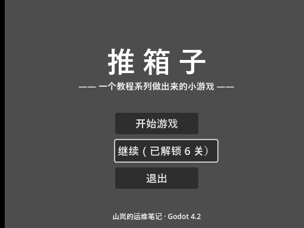
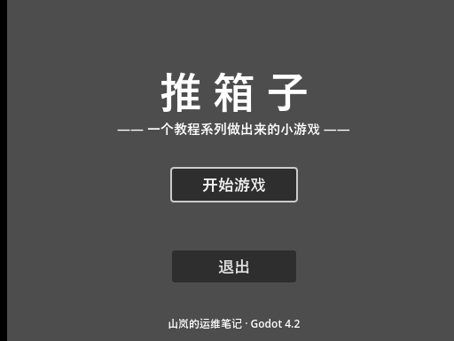
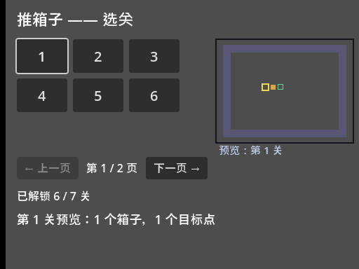

大家好，我是「山岚的运维笔记」。
而家打开游戏直接系选关界面，好似一本书一揭就揭到中页。玩家需要一个大门：开始、继续、退出。
呢一篇将散落嘅场景串成流程——由呢刻开始，双击运行，先见大门，再见房间。
两个场景两条路：主菜单是家，选关是房间。进门可以走去房间，房间按 Esc 也能回家。切换系双向嘅，净系教单程嘅教程都系半桶水。
场景结构没有新东西，全屏 Control 加一串标签按钮。真正的主角是进场那一刻的逻辑：
读一下存档——读到了、解锁数比默认多，才配谈"继续"，而且按钮文字不是干巴巴的"继续"，是"继续（已解锁 6 关）"，数字从存档里来；没进度呢？按钮直接藏起来，焦点交给"开始"。
没有进度时给玩家看一个点了没反应的"继续"，比不显示还难受。

将存档删咗再跑一次，个按钮真系冇咗：

场景切换就一行代码：拿到场景树，调用换场景的方法，传入目标场景的路径。
它做了三件事：加载新场景、把旧场景整个释放、把新场景设为当前。旧的节点连同脚本一起被释放，内存不背旧包袱。这也是为什么切换之后再也拿不到旧场景的引用——它不是"不存在"，是"连坟都没了"。
有个我踩过嘅坑要交代：唔好喺场景自己嘅初始化函数入面直接切场景。场景树正忙着装配当前场景，这时候要求换场景，轻则警告重则出错。真要切，用延迟调用推到帧尾。按钮回调里调用没这个问题——那时场景早就装配完了。
选关那边加一个分支：按 Esc 回主菜单。这个按键不用自己去设置里加，引擎内置了取消动作，默认就绑着 Esc。方向键挪焦点系白送嘅，Esc 都系——呢个引擎对键盘党真系好。

实测整条链路：主菜单按空格进选关，选关读的档和主菜单读的是同一份，第 6 关的按钮是亮的——流程是真的通了，不是两个各自为政的页面。再按 Esc 返屋企，同出发前嗰个画面一个像素都唔差：每次入主菜单都系全新初始化，读档、摆按钮、畀焦点，一步都唔少。
最后一步：游戏入口还指着第一篇那个测试场景呢。项目设置里把主场景改成主菜单，落到配置文件里就一行。
改完按 F5，出来的就是主菜单。主场景决定双击运行后第一个加载的场景，它是游戏的正门。
仲有笔账要记住：主菜单读档、选关都读档，路径同默认值两个常量喺两个文件各写咗一份。两三个场景时复制还行，等选项菜单、成就页都要读档，就该搬进一个公共脚本了——那是 Autoload 的活。
这一篇的关键词：场景切换、内置取消动作、主场景设置。
三行切换代码，流程就闭环喇：打开见门，入门见关，Esc 返屋企。到此为止，阶段三"做成完整游戏"全部完工——玩法、存档、选关、门面、流程，一个不少。
下一篇开始阶段四"发布"：先把界面的字变成能切换的中英文，再谈导出。系列最难嘅其实唔系代码，系导出嗰几篇嘅坑，到时见真章。
流程闭环喇，点赞、在看嚟一套；想睇呢个游戏点样走到发布嘅，关注「山岚的运维笔记」，下一篇接着。评论区有问必回。